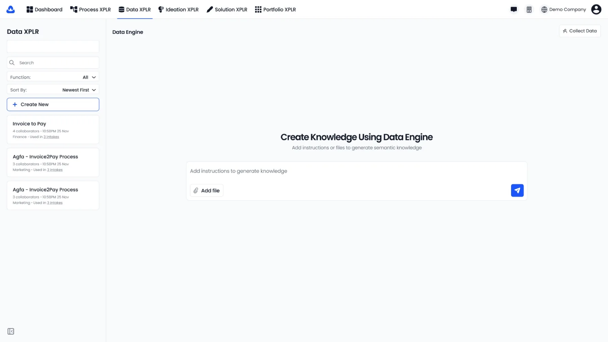
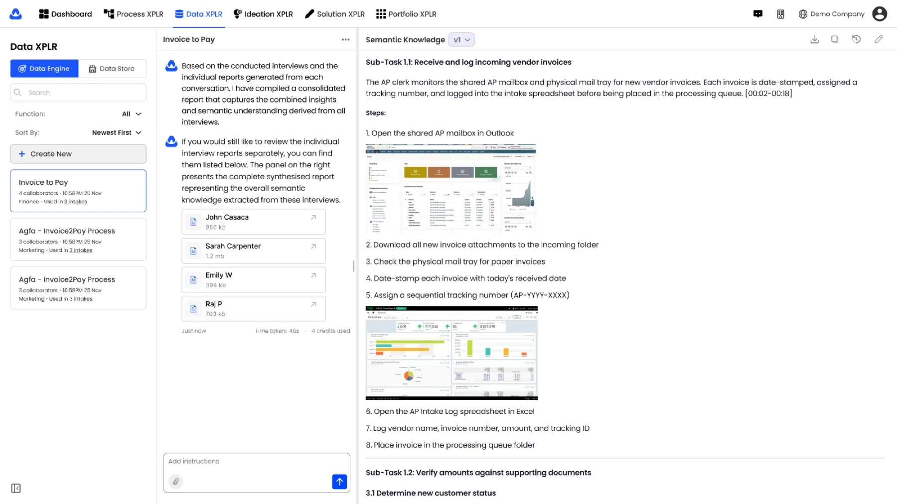
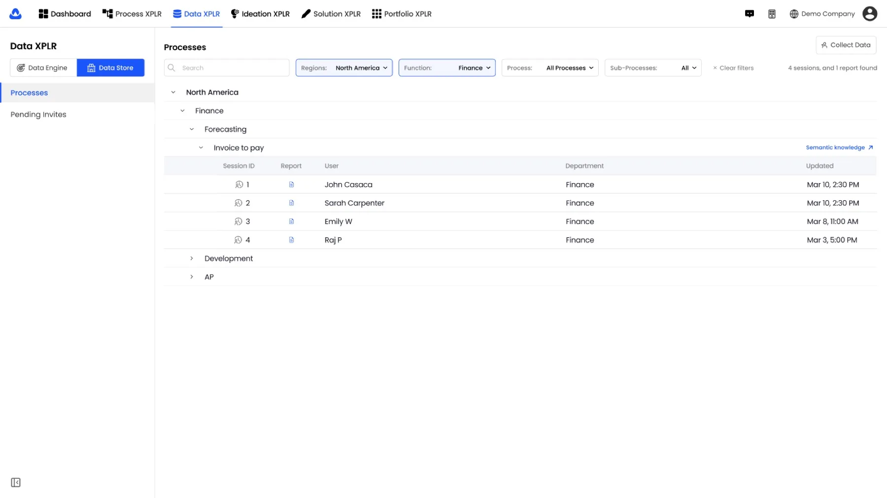
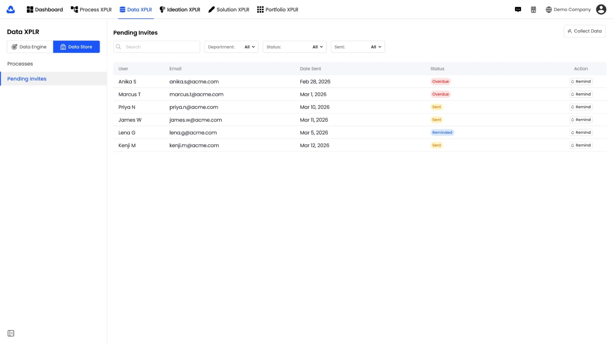

Companies had AI budgets but couldn’t tell which ideas would pay off. I designed AI XPLR to show which ones will, and why: one client’s invoice process turned into 18 AI use cases, and a software firm cut its booking cycle by 60%.
AI XPLR is The Hackett Group’s AI discovery platform. It maps a company’s processes, gathers what employees know, designs solutions, estimates ROI and hands the plan to ZBrain to build. I’ve designed seven parts of it since May 2025.
Industry XPLR: counts from Hackett’s libraries, before any client context.
To · Now · 2026
The dashboard: every opportunity by stage, function and impact, with its benefit.
Dec 20231.0 launch
20242.0
Apr 20253.0
May 2025I join
Sep 20254.0
Jan 20265.0
Sep 2026v5.9.3
01 · IdentifyWhat I own
Scope
All of XPLR’s product design since May 2025. New: COI Dashboard, Data XPLR, Intake XPLR, the ZBrain hand-off. Reworked: Process, Solution and ROI XPLR.
Releases
8 between Feb and Sep 2026.
Working session with the team, Mar 2026: reviewing another product’s dashboard, with the XPLR file open beside it.Design team scrum, Mar 2026: reviewing the Data Store screens with Kapil, our design head.
01 · IdentifyMy process
Every feature went through the same loop, with the same people. Scroll to follow it.
01ScopeRequirements from client calls and market researchBAsClients
02PrioritiseWhat to design first, within technical limitsPMsDesign managerTech architect
03DesignFlows, options and clickable prototypes in FigmaMe
04CritFeedback, twice a weekDesign teamDesign manager
05ValidateChecked against what clients asked forBAs
06Hand overJira tickets with the prototype attachedDevelopers
07FixBugs fixed after each releaseDevelopers
Then back to Scope for the next feature
2×design crits a week
8releases, Feb–Sep 2026
~130bugs fixed in v5.3
Tools: Figma, Jira, Confluence, Teams
01 · IdentifyWhy XPLR
Companies had AI budgets and long lists of use cases. They couldn’t tell which ideas fit their own processes, what each would return, or how to build it. Hackett had the process benchmarks to answer that, and XPLR puts them to work.
30%
of gen-AI projects were expected to stall after the proof of concept by the end of 2025.
Gartner, Jul 2024
100s
of client demos in 2024 surfaced concerns about how to implement AI.
Hackett, Q4 2024 and Q1 2025 calls
ROI
doubts were the main reason clients took longer to decide in 2026.
Hackett, Q1 and Q2 2026
01 · IdentifyWho uses it
AI CoE leadClient
Wants to
Decide which AI ideas to fund first.
Held back by
Ideas and numbers in different places.
Hackett consultantRuns XPLR with clients
Wants to
Turn a client’s processes into solid AI solutions, fast.
Held back by
Long workshops and forms.
Process ownerClient employee
Wants to
Explain how the work really gets done, once.
Held back by
Being pulled into workshops.
Technical leadClient IT or architect
Wants to
Check feasibility and get a design that can be built.
Four new areas, three reworked, and the versions that didn’t make it
02 · IterateBefore I joined
By May 2025, XPLR 3.0 could list thousands of AI ideas. It couldn’t say which ones fit a company, what they would return, or how to build them.
01 · COI DashboardNew
Where does all our AI work stand?
The AI centre of excellence needed one place to see all of its work.
What was missing
No view of all AI work
Value hidden in each module
The decision
One view of every opportunity, by stage and value
What shipped
Pipeline by stage
Value by function
Every opportunity, one table
The shipped screen
1Pipeline by stage, value by function and the benefit case, side by side
2Every opportunity in one table, with an action menu on each row
Variations of COI Dashboard9 other versions
COI Dashboard · variations
Click a screen to see why it wasn’t picked.
02 · Data XPLRNew
Can the AI know our company?
AI suggestions are only as good as the company context behind them.
What was missing
Knowledge stuck in files
Facts retyped for every idea
The decision
Turn files and interviews into reusable knowledge
What shipped
Knowledge from files or prompts
Interviews merged, sources kept
Reuse shown: “used in 3 intakes”
Sessions stored by process
Walkthrough · Data Engine and Data Store
Start empty
From instructions or files




After launch
v5.3 · Feb 2026
Data XPLR keeps typed text and uploads when you switch sessions.
Variations of Data XPLR9 other versions
Data XPLR · variations
Click a screen to see why it wasn’t picked.
03 · Process XPLRImproved
Which processes are worth a look, and has anyone done it?
Clients wanted proof that an idea had worked somewhere before trying it.
What was missing
A huge library of text
No proof anyone had done it
The decision
Show who adopted a solution, then the client’s processes
What shipped
Office → function → process
Popular use cases, with results
Solutions by tier on each card
Before2.0 Taxonomy XPLR: process tiles with solution countsAfterPopular use cases, with the company and its results, above the client’s processes
The shipped screen
1Every AI solution for the process, with its impact tier
2ROI beside complexity, so the effort is visible next to the return
After launch
v5.3 · Feb 2026
Each opportunity shows where it came from in Process XPLR: Office → Function → Process Group → Process.
Variations of Process XPLR10 other versions
Process XPLR · variations
Click a screen to see why it wasn’t picked.
04 · Solution XPLREvolved
Can AI help design the solution, and can we trust it?
Building agents was getting cheaper. Designing the right solution was still slow.
What was missing
A form to fill in
No AI help, no checks
The decision
AI reviews as you write; each team approves its step
What shipped
Questions with Data XPLR built in
Live AI evaluation
Benefits, feasibility, blueprint
One approver per step
BeforeThe live app, Jun 2025: a requirements formAfterA stepped report; feasibility waits for the technology team
The shipped screens
01Guided questions that pull from Data XPLR02The AI evaluates the idea while you write03Solutions with status, agents, benefits and ROI04Approved, then sent to ROI XPLR
After launch
v5.3 · Feb 2026
Blueprint and Feasibility data kept in sync.
v5.9.3 · Sep 2026
You see who else is editing a Blueprint, and you’re asked before unsaved edits are discarded.
Variations of Solution XPLR9 other versions
Solution XPLR · variations
Click a screen to see why it wasn’t picked.
05 · ROI XPLREvolved
Is it worth building, and why this one first?
Clients kept asking whether AI would pay off before they committed.
What was missing
Totals without reasons
Ranking left to the reader
The decision
A score with its reasoning, and one recommendation
What shipped
An AI recommendation on top
Benefits, cost and ROI per solution
Benefit cases drafted, then edited
Weak options greyed, not deleted
Before2.0 Process Prioritization: an empty ROI table with totalsAfterA ranked list with an AI recommendation and the reasons
Walkthrough · ROI XPLR
Ranked, with a recommendation
XPLR Pick and KPIs on top
After launch
v5.3 · Feb 2026
Total Benefits calculation corrected, including customer lifetime value. “Delete” became “Remove”, with an audit trail.
v5.9.3 · Sep 2026
Potentially misleading colour indicators removed from the summary; XPLR Pick re-ranks in real time.
Variations of ROI XPLR10 other versions
ROI XPLR · variations
Click a screen to see why it wasn’t picked.
06 · Intake XPLRNew
What do the people doing the work actually know?
The people who know how work really happens are the ones doing it.
What was missing
Knowledge came from workshops
Depended on who was in the room
The decision
An AI interview for every employee
What shipped
An emailed invite
A live interview with a checklist
A report per interview
An admin review of each session
Walkthrough · Intake XPLR
The invite
An email to each employee
Variations of Intake XPLR3 other versions
Intake XPLR · variations
Click a screen to see why it wasn’t picked.
07 · XPLR → ZBrainNew
How does an approved design become a build?
An approved design had to reach the build without being redone.
What was missing
Designs rebuilt by hand
The decision
Documents ZBrain can use, downloaded or opened
What shipped
An AI Solution Blueprint
Download or open the solution
Export templates and a preview
The shipped screens
1Download the report and take it straight into ZBrain
2Open the solution, its intake or its version history from one menu
02An AI Solution Blueprint, ready for ZBrain03Pick a template for the exported report04Preview, then download the PDF
Variations of XPLR → ZBrain4 other versions
XPLR → ZBrain · variations
Click a screen to see why it wasn’t picked.
03Impact
Results, outside signals, and what’s still open
03 · ImpactResults
18
AI use cases from one client’s invoice processGrouped into 7 improvement themes
60%
faster booking cycle for a software firmAfter an AI XPLR engagement
<1 hr
for a first solution draft that took a team 4 to 6 weeksHackett’s estimate
+5 pts
higher project margins on Hackett’s own transformation workQ1 2026, with XT
03 · ImpactOutside signals
Partner
Used by IBM Consulting
IBM brought AI XPLR into its client work in Mar 2026 to find and size AI opportunities.
Flagship
Carried into XT
Hackett’s new flagship platform integrates a significant portion of AI XPLR.
Partner
“Game changing”
A global technology and consulting firm, after nearly six months of testing it on client work. Two hyperscalers have since asked for demos.
Product
Sold the way I designed it
The COI dashboard, guided intake, Data XPLR and ROI XPLR lead how the product is sold.
Eight releases shipped between Feb and Sep 2026, with about 130 fixes in v5.3 alone.
03 · ImpactStill open
Licensing
Licensable since v5.0 in Jan 2026, with no licence revenue reported yet.
Partners
IBM paused joint go-to-market in Aug 2026.
03 · ImpactWhat isn’t measured yet
The results above come from client work. The design itself isn’t measured yet. These are the four I’d track first.
Time to first idea
From setup to an approved opportunity.
Self-serve intake
Intakes finished without a consultant.
ROI that holds
Benefit cases approved without re-estimation.
Clean hand-offs
Blueprints built in ZBrain without rework.
03 · ImpactWhat I learned
Identify
Context beats more ideas.
Iterate
A number needs its reason next to it.
Impact
The hand-off is part of the design.
Reflection
People trust an AI tool when they can see its reasoning: where an idea came from, why it ranks where it does, and what happens next.
Sources
AI XPLR Figma files, May 2025 – Nov 2026
XPLR release notes, v5.3–v5.9.3, 2026
The Hackett Group: XPLR 3.0, 4.0 and 5.0 releases; IBM release, Mar 2026; “The AI Enterprise Performance Gap”, Oct 2026
The Hackett Group earnings calls, Q3 2025 – Q3 2026